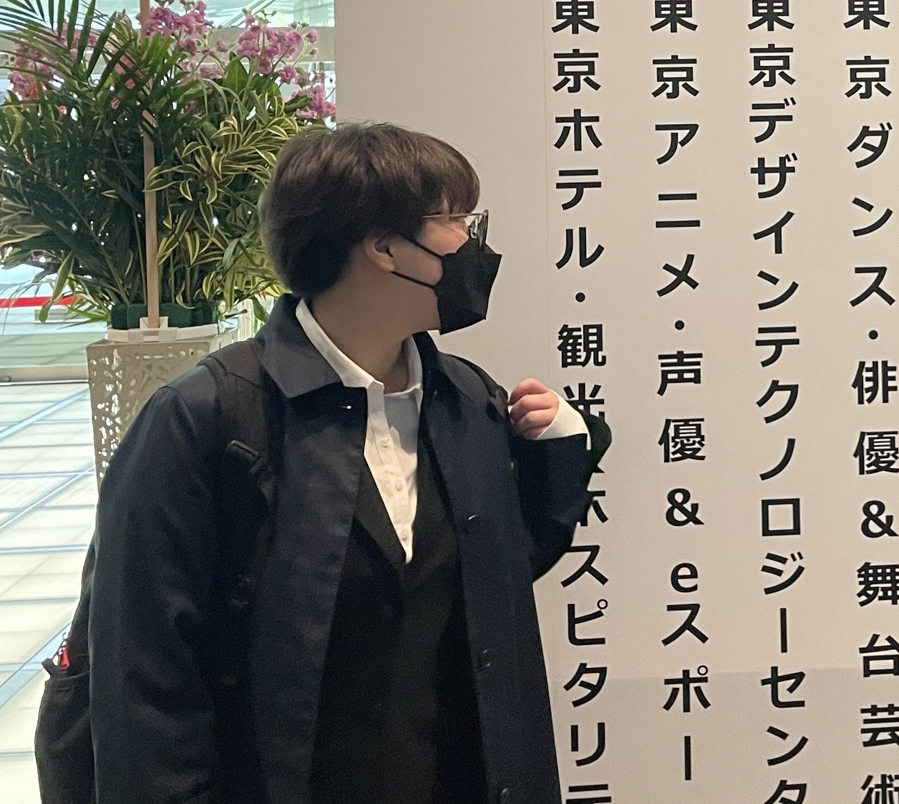
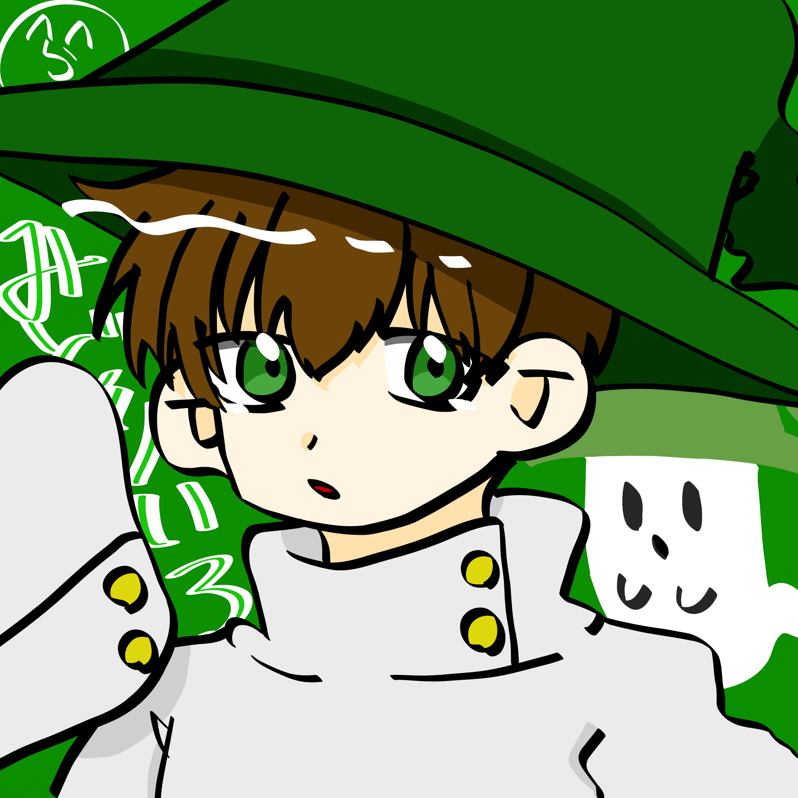
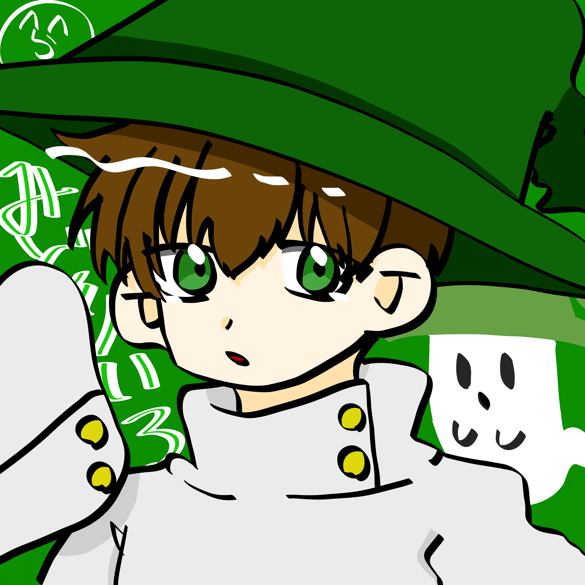

Profile
いしもりみゆう
石森美憂
2004年 生まれも育ちも千葉県。高校1年の時精神的な病に悩み、2年次には自分の気持ちを切り替えるためにも通信制高校へ転校。
1度見失った自分のやりたかったことを思い出し、プログラミングの勉強をするためIT系の専門学校へ入学。
HTML / CSS / JavaScriptなどのWeb系の言語や、Photoshop / Illustrator などのAdobeのツールを用いてデザインを勉強中...。
2004年 生まれも育ちも千葉県。高校1年の時精神的な病に悩み、2年次には自分の気持ちを切り替えるためにも通信制高校へ転校。
1度見失った自分のやりたかったことを思い出し、プログラミングの勉強をするためIT系の専門学校へ入学。
HTML / CSS / JavaScriptなどのWeb系の言語や、Photoshop / Illustrator などのAdobeのツールを用いてデザインを勉強中...。
 

趣味の範囲で絵を描いています。
大体二次創作ばかりです。
ごくまれに一次創作.色塗りをします。


趣味の範囲です。
夜の東京駅周りをただ歩いてるだけでも
気持ちがすっきりします。
ディズニーリゾートも大好きなので
よく写真を撮っています。
カメラが欲しい。
HTML ★★★☆☆
▷▷まだ基礎部分までの知識量です。
CSS ★★★☆☆
▷▷好きですがまだ基礎的な部分しか取り組めていないです。
Javascript ★★☆☆☆
▷▷こちらも好きですがまだ基礎的な部分しか取り組めていないです。
Photoshop ★★★☆☆
▷▷デザインを考えるのが好きなので、たまに個人的な用途で使っています。まだ自信を持って紹介できるような作品ではないです。
Illustrator ★★★☆☆
▷▷こちらも個人的な用途にたまに使ったりしています。
Microsoft Azure AI Fundamentals
(他にも資格が取れるように勉強中です…)